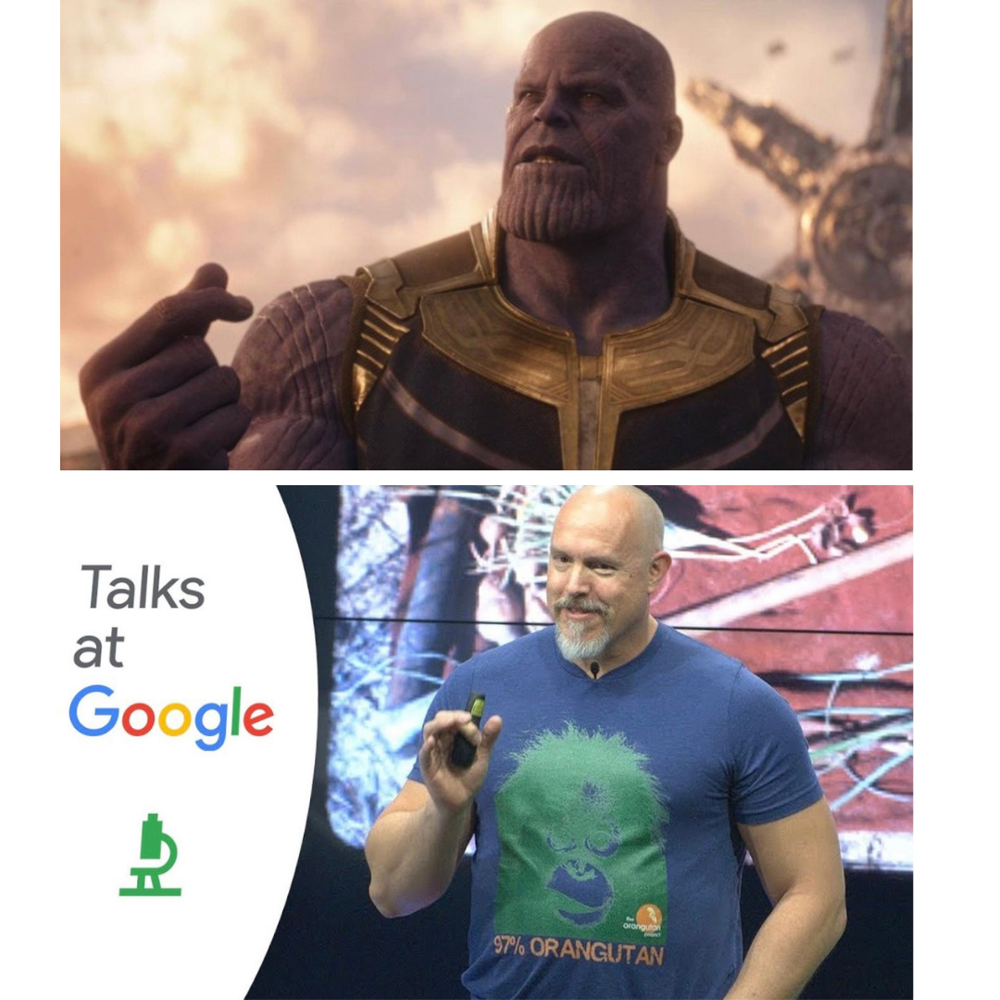

Adaptation Notes
Preface
These are lecture notes to accompany my class, Adaptation.
I first developed this class when I moved from the Anthropology department to the Department of Earth System Science. There was a new masters program in sustainability and the director of this program wanted a class that taught complexity and socioecological systems. I took up the challenge. Of course, after developing the class, I was told that the program had gone in a different direction and my class wouldn’t be a core class for the program after all, but by then it had taken on a life of its own.
My initial thought was to analyze the different ways that the term “adaptation” was used across cognate disciplines. When I first moved into the School of Earth, I became aware that the people focused on climate change and related issues clearly meant something different by “adaptation” than I did.
This seemed like an interesting approach for a class on adaptation. The only problem was that as I read work on adaptation in the climate-change sense, I was struck by two things: (1) how the valence accorded the term adaptation is fundamentally different in the climate-change literature than it is in the evolutionary sciences, and (2) in how bereft of theory the field of climate-change adaptation is.
When an evolutionary biologist talks about adaptation, it is typically done so with a strongly positive valence. An adaptation means that the organism has overcome some persistent environmental challenge and improved itself. It has ascended the fitness landscape toward a more optimal phenotype. It has come up with a clever solution.
When a climate scientist or policy-maker talks about adaptation, there is resignation. Adaptation is synonymous with resignation or settling. There is an underlying Freirean pessimism that somehow by adapting people are not liberated, but are coping.
There seems to be more than just a little status quo bias in this framing.
What I decided to try instead was to explore how evolutionary and ecological theory of adaptation could be applied to understanding the current human predicament. We wrote a paper on this topic laying out some of our early thinking (Jones, Ready, and Pisor 2020).
Now, just because an evolutionary perspective on adaptation has positive valance doesn’t mean everything is roses and we can adapt our way out of any predicament. Natural selection is the only evolutionary mechanism that can produce adaptation and, of course, natural selection has a dark side. Ernst Mayr, an architect of the Modern Evolutionary Synthesis, characterized natural selection as “nonrandom elimination.”
Naturalistic fallacy, etc. Don’t be a little bitch and confuse an is for an ought.
Yes, we should mitigate the future effects of climate change, but mitigation in the absence of adaptation is just more status quo. A real Freirean dialogue can come about when mitigation and adaptation work in concert. We should prevent bad things that we know are likely to happen, but we should also work toward better solutions.
The structure of the notes follows the structure of the class. What follows are ten chapters:
5 Risk, Uncertainty, and Decision-Making
7 Emergence and Governing the Commons
8 Dynamic Optimization and Adaptive Management
10 The Structure of Successful Problem-Solving
Evolution is a Snap

The Great Nothings of Adaptation
These notes are organized around what I call “The Two Great Nothings of Adaptation”:
Nothing in biology makes sense except in light of evolution (Theodosius Dobzhansky)
There is nothing more practical than a good theory (Kurt Lewin). But must keep in mind the Bendor Corollary: “There is nothing more impractical than a bad theory.”
These notes primarily deal with the scientific theory underlying adaptation in complex socio-ecological systems. Scientific Theory is an explanation of some aspect of the world. Good scientific theories have been tested and corroborated repeatedly by established research methods. Scientific Theory goes beyond facts or observations by providing a structure for investigation and providing answers to how questions. To be useful, a scientific theory must make testable predictions. These should distinguish it from competing theories.
Why is theory so important? As suggested by three greats of ecology (Roughgarden, May, and Levin 1989), “More importantly, perhaps, theory can imagine and explore a wider range of worlds than the unique one we inhabit, and by so doing can lead to fresh perceptions and new questions about why our actual world came to be as it is.”
Theory allows us to make statements about states of the universe that we have not yet seen. This is especially important in the context of adaptation and sustainability. Sustainability is ultimately about the future, and the future is, by definition, a world we have not yet experienced. This means that theory is particularly important for the pressing problems of sustainability.
In a stationary environment, where the mean and variance stay the same despite short-term variability, optimizing your decision-making based on your prior experience with the environment is a sound policy. However, in nonstationary environments, doing so can be a disaster. Nonstationary environments create what the psychologist Robin Hogarth called a wicked learning environment. In such environments, lessons that we learn from the past do not help us perform better. The economists John Kay & Mervin King note that when the learning environment is wicked “the application of the mathematics of probability is questionable and the results ambiguous.” In other words, in uncertain, wicked learning environments, maximization of something like expected utility, the primary tool of decision theory, economics, and planning won’t do us much good.
We live in a time of nonstationary change. When we optimize, we are adapting to the past.
The Stanford Doerr School of Sustainability’s own Bill Barnett has noted how bad we are at identifying transformative technologies before they do their transforming. Optimization and consensus approaches may get you incremental improvement, but they will not produce transformation.
Some themes we will weave together in these notes:
- Ecology, not Mechanics
- Adaptation is Evolutionary
- Optimality is for Small Worlds, not Real Ones
- Resilience, not Stability
- Adaptability and Robustness Trade-Off
- Uncertainty Changes Everything
- Adaptation Requires Diversity
- Need to Jettison the (Standard) Narratives of Progress
I’ll conclude with a nod toward another obsession of mine: the utility of climate fiction for helping us to imagine adaptive societies. In her acceptance speech at the 2014 National Book Awards’ Medal for Distinguished Contribution to American Letters, Ursula Le Guin noted:
I think hard times are coming, when we will be wanting the voices of writers who can see alternatives to how we live now, and can see through our fear-stricken society and its obsessive technologies, to other ways of being. And even imagine some real grounds for hope. We will need writers who can remember freedom: poets, visionaries—the realists of a larger reality.
Fair Warning
These notes are a work in progress and, as such, are necessarily incomplete. They are, in places, quite telegraphic. Some chapters are far more complete; others are more like the presenter notes from lecture slides (because that’s what they are!).